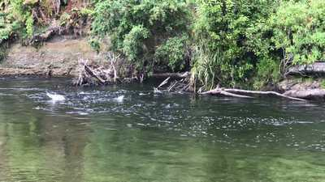
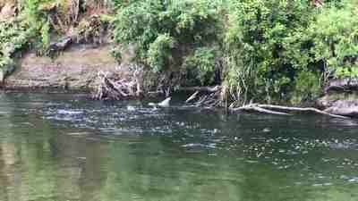
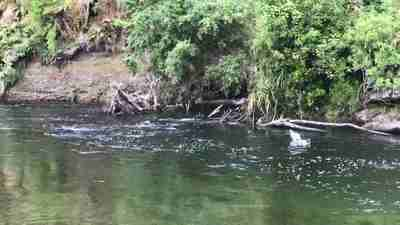
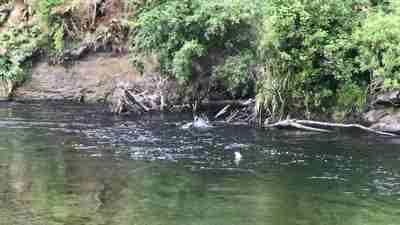
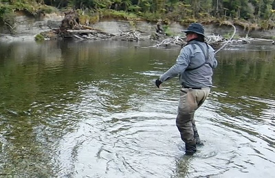
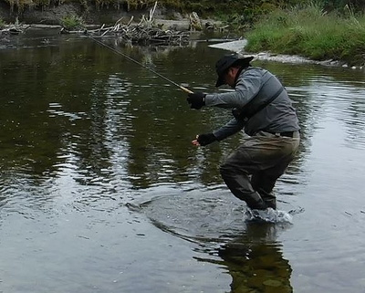
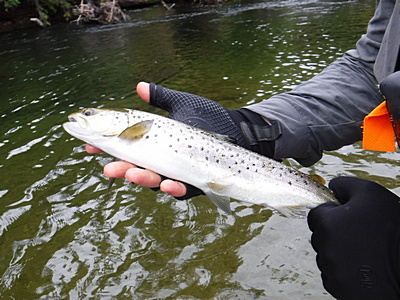

釣行日誌 ＮＺ編 「一期一会の旅：A Sentimental Journey」
鱒たちの饗宴
11/24(SAT)-2
ちょうど昼時の満潮になった頃、それまで歩いていた左岸から対岸に渡り、あたり一面流木の塊に囲まれた広く大きな淵に出た。対岸の水辺に倒れ込んだ数本の大木の幹の後ろで、突如水しぶきが上がった。それが合図だったかのように、続いて淵のアタマ、流木の塊で流れの曲がったポケットで、立て続けに大きなしぶきが連続して始まった。




虫へのライズではなく、遡上するホワイトベイトに次々と襲いかかる鱒のボイルである。あまりのエキサイティングな光景に言葉を失って眺めていると、サウス・ウェストランドでの釣りの経験豊富なディーンも
「こんなのは初めてだな！」
と、驚いている。南島南部の町、ゴアの近くを流れるマタウラ川は、ブラウントラウトが作り出す雨だれの波紋ような無数のライズで世界的に有名だが、この淵はまるで沸騰しているかのようにブラウンたちが次々と水しぶきを上げている。
次の瞬間、最初に水しぶきが上がった下流側のポイントで再び大きく水面が炸裂した。あれは大きい！ティペットの傷をチェックし、グレイゴーストを結び直してから静かに流れに立ち込んで、対岸の流木の背後に出来た淀みを狙う。何とか届きそうな距離だ。ストリーマーが水に落ち、すかさずのストリッピング。白いフライが幹の陰を通過するが反応は無い。もう１度。また無反応。ディーンの指示で、1ｍずつ下流へ狙いを動かして探って行くが、絶対に居るはずの鱒が喰ってこない。２、３歩ステップを進めて再度暗い陰へ打ち込む。するとフライの50cmほど横でまた水しぶきが炸裂する。これで完全に頭に血が上ってしまった。(笑) ムキになって今のスプラッシュへとフライを投げて引っ張るが、やはり何も起こらない。
「ゴウ、少しずつ上を探って見ろ。」
ディーンの指示で、倒木の前面、淵の流れ出し、渦巻くポケットなどを続けて探っていくが、どうも最後のキャストで力むので、大きなストリーマーがターンオーバーしておらず、ティペットに弛みが残ったまま着水しているので、ストリッピングを始めてからフライが泳ぎ出すまでにアクションが無いまま鱒の目前を流下してしまうらしかった。
こんな狭いポイントであれほどの数の水しぶきが上がるのだから、この淵だけでもおそらくは10尾ほどの鱒がかたまって獲物を狙っているはずだった。ふと気付くと、流心を横切るグレイゴーストの後ろを大きな影が付いてくる。
『喰えっ！ そこだっ！』
何かが気に入らないのか、その大物はプイッと横を向いて深みへと消えた。
『うーん！アタマに来るぅ～！ こんだけ居るのに釣れないのか！？』
またまたキャストに力が入り、手首が開く。もうここへ来てから30分は経っただろうか？夢中になってポイントに近づいてしまっており、しだいに鱒のボイルが静まってしまった。ディーンが見かねて、
「ゴウ、しばらく場所を休ませよう。それとフライを替えてみるか？」
と言いつつ、フライボックスから別のホワイトベイトパターンを出して結び替えてくれた。あれだけ狂乱の騒ぎで獲物を漁っていてもフライを選り好みするのには驚かされた。
小雨が降り始めた中、ランチを食べつつ20分ほど観察していると、鱒たちは安心したのか、再びボイルが始まった。新しいフライでさらに攻めてみる。が、しかし、キャスティングの未熟さは新しいフライでもカバーしきれず、未だにアタリが無い。
「ちょっと貸してみな。」
と言って、ディーンが手を伸ばしてきた。ロッドを渡すと、淵の真ん中に倒れている流木の幹すれすれにフライを投げ込み、着水と同時にロッドティップをチョンチョンと動かしてアクションを付け、それからおもむろにストリッピングを始めて引いてくる。
『ほほぉ～！ああやって最初のアクションを付けるのか....なるほど。 おおっ！』

彼の最初のキャストにいきなり鱒が喰い付いてロッドが曲がり、追い合わせを入れる。倒木の下に逃げ込まれないよう、数メートル後ずさりながらラインをたぐり寄せる。流水中に垣間見える魚影はそれほど大きくは無いが、力強く引き込んで行く。余ったラインがディーンの左足に絡んだが、相撲取りのような巨体で足をヒョイッと上げてバランスを取りつつ難なくほどいてリールファイトに入った。

楽々と浅場まで寄せてきたが、さすがにネット無しでは取り込みに手間取っていたので、彼のバックパックからランディングネットを取り外して助っ人に向かう。ところがそばまで歩み寄った時にはすでにハンドランディングしてしまっていた。40cm級のブラウン、ディーンにとっては小型だ。彼の手のひらから勢い良く水に飛び込んで逃げていった。

今度は下流側、倒木後ろの大きな水しぶきが上がったポイントを狙い、ロングキャストで小さめのホワイトベイトパターンを投射する。あそこに居るやつはデカイだろう....。淀みにフライが落ちると、彼は見込みのありそうな1.5mほどの筋を全てロッドティップでチョンチョンのアクションで引き切り、次のキャストを振り込む。左手でのストリッピングはしない。
『ははぁ、ああすれば手返し良く連続して探れるのか....。でもディーン、教えてくれなかったよなァ。』(笑)
名人の技を盗みつつ見学する。彼もこのポケットには大物が居ると読んでいるらしく、珍しくフォルスキャストを何度も繰り返し、鱒の影を探しながら次のキャストポイントを選んでいる。しかし、彼の腕をもってしてもそこの大物は反応せず、何度ものキャストが「スカ」に終わった。彼でもいささか熱くなってきたのか、岸辺の僕のことは眼中から消えたらしく(笑)、さらに上流のポイントを探って行く。僕はその間、淵のアタマの激しいボイルを動画に撮り続けていた。
さらにディーンは倒木の幹沿い、曲がりの流れ出し、流木の間、淵のアタマの水のぶつかり、などなどを順に攻め続けるが、あれだけ居たはずの鱒からは何の反応も無く、しだいに激しかったボイルがまたもや静まってしまった。２人してムキになってかなりポイントに近づいてしまったので、饗宴に興奮していた鱒たちもさすがに僕らの気配を感じ取って隠れてしまったらしい。かれこれこの淵で１時間ほども粘っていたのだから無理も無いか....。
もう１往復、１連のポイントを攻めてみた後で、
「ようし、上のポイントに移ろう。あっちにはもう２尾、“新鮮”なやつが居るぜ。」
と彼は言って、淵へと流れ込んでいる早瀬の方をロッドで指して見せた。さっきから、浅く速い流れの岸沿いギリギリのポイント２カ所で、水しぶきが上がっていたのを僕も目撃していたのだ。
釣行日誌ＮＺ編 目次へ
サイトマップ
ホームへ
お問い合わせ